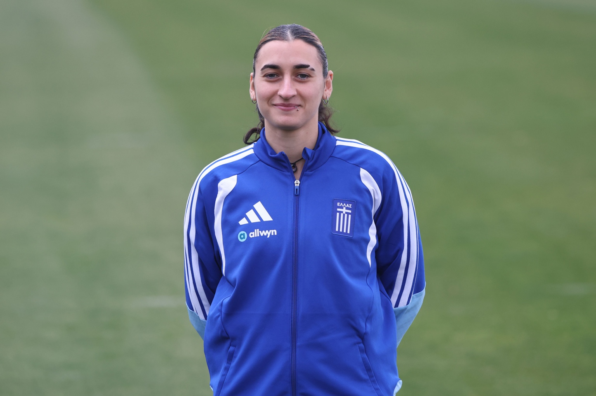

VERO FOOTBALL AGENCY PLAYER CV UPDATED 27 SEPT 2026
Grigoria Pouliou
Forward Panathinaikos

01 / PROFILEPLAYER
Greek international forward playing for Panathinaikos.
- Position
- Forward
- Current club
- Panathinaikos
- Nationality
- Greece
- Date of birth
- 23 October 2000
- National team
- Greece senior national team
- Club country
- Greece
02 / CAREER
CLUB RECORD.
A selected career outline from public sources. Dates and appointments may change.
| PERIOD | CLUB / ROLE |
|---|---|
| 2024–present | PanathinaikosGreece · Forward |
| 2022–2024 | Medyk KoninPoland · Forward |
| 2021–2022 | Aris LimassolCyprus · Forward |
| 2018–2021 | PAOKGreece · Forward |
03 / PUBLIC RECORDS
CHECK THE
SOURCE.
These independent club and football records provide context. Statistics and club status can change during a season.
04 / PROFESSIONAL ENQUIRIES
LET’S TALK FOOTBALL.
For professional enquiries regarding Grigoria Pouliou, contact VERO directly.